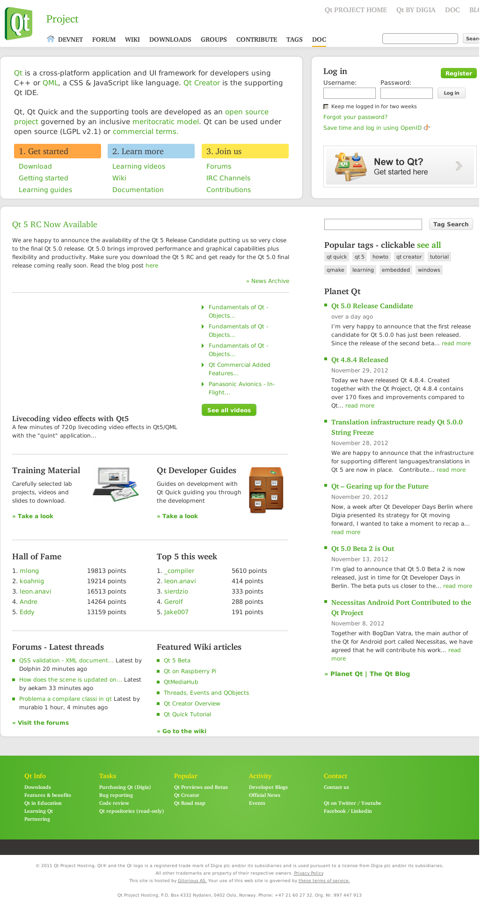

WebKit Frame Capture Example
Demonstrates how to capture frame in the web page
The Frame Capture example shows how to use the WebKit browser engine to obtain images of frames in a Web page.
This example is designed to be run from the command-line. Run the example with a URL and the output file name as arguments. The application captures the frame contents in a PNG image with the file name your specified.
The following output image is generated by the application, if you pass the URL, www.qt-project.org.

Files: